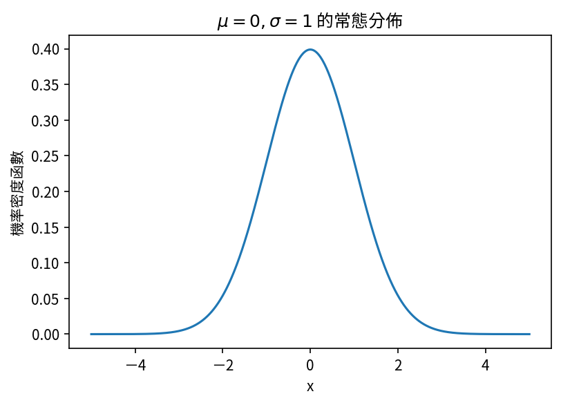

在 matplotlib 的圖中顯示中文應該是每個使用 Python 做科學繪圖的人滿想輕鬆解決的問題。
今天就迅速解決吧。
步驟 🔗
- 首先下載 Google 的開源字體 Noto Sans CJK TC。（搜尋 “Taiwan” 能更快找到哦。）
- 打開資料夾後安裝至少一個字體。（像我是安裝
NotoSansCJKtc-Regular.otf。） - 刪除
matplotlib的快取資料夾:rm -rf ~/.matplotlib - 引入
matplotlib並設定字體的參數：
import matplotlib as mpl
mpl.rcParams.update({"font.sans-serif": "Noto Sans CJK TC"})
# ...
這樣就搞定囉。
範例 🔗
import numpy as np
import scipy.stats as st
import matplotlib.pyplot as plt
import matplotlib as mpl
mpl.rcParams.update({
'font.sans-serif': 'Noto Sans CJK TC',
'figure.dpi': 150, # for prettier plot
'figure.facecolor': 'white'
})
x = np.linspace(-5, 5, 1001)
gaus = st.norm.pdf(x)
plt.plot(x, gaus)
plt.xlabel("x")
plt.ylabel("機率密度函數")
plt.title(r"$\mu=0, \sigma=1$ 的常態分佈")
plt.show()

連跟 LaTeX 都相處融洽呢。
關於字體 🔗
References 🔗
-
感謝 Victoria Mesbere 的來信告知。 ↩︎